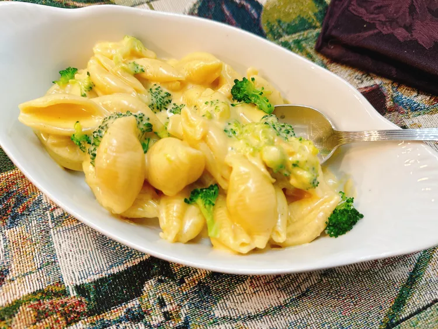

Broccoli Cheddar Mac & Cheese

Description
This broccoli mac and cheese adds bright green broccoli to an easy pasta in a Cheddar
and Parmesan cheese sauce. Macaroni and cheese is such an easy dish to customize, and
this is a great way to get your veggies from this classic comfort food.
Ingredients
- 4 cups water
- 4 teaspoons chicken soup base (such as Better than Bouillon®)
- 1 1/2 cups evaporated milk
- 1/4 cup heavy whipping cream
- 1/2 teaspoon Worcestershire sauce
- 1/2 teaspoon Dijon mustard
- 1 teaspoon paprika
- 1/2 teaspoon cayenne pepper (optional)
- 1 pinch salt
- 1 pound pasta shells or elbow macaroni
- 1 1/2 cups shredded sharp Cheddar cheese
- 1/3 cup freshly grated Parmesan cheese
- 3 cups roughly chopped broccoli florets
- 3 tablespoons water
- salt and freshly ground black pepper to taste
Steps
-
Add 4 cups water and soup base to a large saucepan over medium-high heat; stir to dissolve
soup base. Stir in evaporated milk, whipping cream, Worcestershire sauce, Dijon mustard,
paprika, cayenne, and pinch salt.
-
Add in pasta, cover, and bring to a boil. Reduce heat to medium-low, and cook, stirring
frequently, until pasta is tender with a bite, 8 to 11 minutes. Stir in Cheddar cheese
and Parmesan cheese; allow to melt into the sauce.
-
Place broccoli and 3 tablespoons water In a microwave-safe container. Cover; steam
broccoli on High in the microwave until tender, about 4 minutes.
-
Drain broccoli florets and add to pasta, gently toss to coat, and season to taste
with salt and pepper. Serve immediately.